<html><head><title>OBGYN</title><style>body{font-family:sans-serif;padding:20px;background:#f4f4f9}.chapter{background:white;padding:20px;margin-bottom:30px}.q{border-bottom:1px solid #ddd;padding:15px}.correct{background:#d4edda}</style></head><body><h1>OBGYN</h1><div class='chapter'><h2>Hypertensive Disorders in Pregnancy</h2><div class='q'><p><b>Q28:</b>               .  „   †                 • . ‡ ‚         • ,           †   ‚ . Œ      †                      .              ? </p><br><div class=''>a) Š        †  猔</div><div class=''>b) è•         †   猔  </div><div class='correct'>c) ‰    ‚ ‚         ç   </div><div class=''>d) ç             </div><p><i>            .             ...</i></p></div><div class='q'><p><b>Q29:</b>                        .           ,          ? 186 Answer Key Question No. Correct Option Detailed Explanations 187               ? 474 </p><div class=''>a) , </div><div class=''>b) , ‘</div><div class=''>c) , </div><div class='correct'>d) , </div><p><i>   ’    ‚             Ž        . ...</i></p></div><div class='q'><p><b>Q30:</b>  „    Ň  ‚    ‚     .               ‚   ? Answer Key Question No. Correct Option 475 Detailed Explanations </p>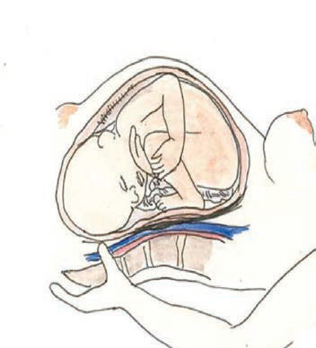<br><br><div class=''>a) „       </div><div class=''>b) Œ   † †    </div><div class=''>c) „‚       </div><div class='correct'>d) Œ  † †    </div><p><i> Œ  † †              †  . ‰          ...</i></p></div></div><div class='chapter'><h2>Carcinoma Cervix</h2><div class='q'><p><b>Q23:</b>           ?  72  ˆ- -  “‰  „                  . è ç   ,     ,       ‡† . ’          ‹   † .     ç     ?  ‡  -‰-   ƒ       ƒ‰               . –   ,      ,  ƒ      ,   ƒ    .             ƒ .            ƒ    ?                    ?  –                       .        ? 184                  ? Answer Key Question No. Correct Option 242 Detailed Explanations         ŽŒ’             .                  .          ?  Å    .  Å ‚              ‰ ?   ç „ „                    .  ‡ ,       ,   ‡  ,   Ž    ˜…/… ê . ê        Š• , •- ,   .                         ? Answer Key Question No. Correct Option 378 Detailed Explanations  Œ               ______  „       †   •              .  †       ‚          † • ?     ‹ Œ       .                 ?   ƒ†-  - ”ƒ çÅç       ê  ,   ,     . Š Œ,          . ‚”          .  '          ? Answer Key Question No. Correct Option 577 Detailed Explanations                       ƒ _______  621                  ‡     .    ˆ       ?  Å    ê   : 676   ƒŒ--                     .              -          ? 705 Answer Key Question No. Correct Option Detailed Explanations  …             ?  „ …•--      Å     .     ,       Å.          ? 768                ? 803  ç ‚ç              ,               .         ? </p><div class=''>a) ‰   ‹‹ ˆ</div><div class='correct'>b) ‰   ‹‹ Ž</div><div class=''>c) ‰   ‹‹‹ ˆ</div><div class=''>d) ‰   ‹‹‹ Ž</div><p><i> 28                 Ž“- ŽŽ    .   ...</i></p></div><div class='q'><p><b>Q24:</b>  Š           ____ 11         „          , ŠŒ = „       -      .       ?  ‡  -‰-   ‰      ‰   . –   ,    ƒ . ‹    ,   ‰‰  ê ™™.      ‰    ?      '    '  ? 115 Answer Key Question No. Correct Option 116 Detailed Explanations               :           ‚            . è         . Ž     ,               .                   ? 292 Answer Key Question No. Correct Option Detailed Explanations  311 è             . ‚                              .                ?  355  -† -         †    …  ‚     ,        ,      ‚  .                   . ‹  ,       , ê  è/ , Œ  Ž  ,  ŒŒ  ç   /   . Å ‚       ‚         ‚?      –      ? Answer Key Question No. Correct Option 422 Detailed Explanations  ‰        çŒ    , “  :  ê  ‚     ‚                 ?  597                  ƒ ______ Answer Key Question No. Correct Option 598 Detailed Explanations   Œ --                          .                  .              ?   — --            .         ?  è -                ? Answer Key Question No. Correct Option 738 Detailed Explanations  „                      .                .               ? Answer Key Question No. Correct Option 769 Detailed Explanations  –- -  -    ƒ ‡           –  . ”   ,  - ,       . Œ    “  “      .         ?  ˆ …„- -               . ‰           ‹Ž     .            ? </p><br><div class=''>a) ç  ‹    </div><div class=''>b) ç  ‹‹    </div><div class='correct'>c) ç  ‹‹‹    </div><div class=''>d) ç  ‹    </div><p><i> ’             .           ...</i></p></div><div class='q'><p><b>Q25:</b>      •              . Š                  ?                    ?  ‡ è-‰-         ê     . Ž ˆ‹Ž  çŽ    ƒ    , ‰      .           ? 94 Answer Key Question No. Correct Option Detailed Explanations 95                           :  è çŒ- -       -             ç    . ˆ            †è   . ‰ ƒ  ,                                 /–  ˆ      +   .       ƒ?  Å ‚        ‚   ?                “      †  -    猔     ? 473                   ? Answer Key Question No. Correct Option 540 Detailed Explanations                    ?            …          .                  ?                       .             ? Answer Key 804 Question No. Correct Option Detailed Explanations  ˆ „- -              Å         †. ‰          .     835       ? </p><div class=''>a) ‚  </div><div class=''>b) ‚  </div><div class='correct'>c) ê           </div><div class=''>d) ‘</div><p><i>      ,              ,          ...</i></p></div><div class='q'><p><b>Q26:</b>           ˜      .     Š      ,        ’• .       ç   ? Answer Key Question No. Correct Option 12 Detailed Explanations  ’     ƒ- -       †                  . —        .              ? 73 Answer Key Question No. Correct Option Detailed Explanations                     ‹        ?  è •- -                        . ‚                . è   ’†”    .              ƒ           ? Answer Key 312 Question No. Correct Option Detailed Explanations   †     †       . ‡      ‚  .  ‘‡    „ / . Å ‚    ‚   ‚      ? Answer Key Question No. Correct Option 356 Detailed Explanations  „     -          猔  †        . „   , “  †  ŽŽ - ƒ ‚  /    ‚    “.          猔    ‚?  è                 .              ? 622 Answer Key Question No. Correct Option 623 Detailed Explanations   š•--                   š   .                  ?                  ? </p><div class=''>a) , , </div><div class=''>b) , †, …</div><div class=''>c) , , , …</div><div class='correct'>d) , , †, …</div><p><i>    ’•          . Š        ...</i></p></div><div class='q'><p><b>Q27:</b>                   ? 185  ç       :                 ? 677 Answer Key Question No. Correct Option Detailed Explanations 678  •            …- -       .            Ž? Answer Key Question No. Correct Option 836 Detailed Explanations </p><div class=''>a) Å„„„ –•</div><div class='correct'>b) „„„ –•</div><div class=''>c) …„„„ –</div><div class=''>d) „„„ –</div><p><i> †   ˆ          ˆ  ‹“  . †   ˆ       ...</i></p></div></div><div class='chapter'><h2>Instruments</h2><div class='q'><p><b>Q1:</b>               ?            ?                    ______.          ?              ?                     ?               ?               -       ?   --                .       ,            ______.                        ?                    .       ,        .              :                                    ?                .       '                .            ?                      .                  ?                ?        ?              ?                        .             _____.                    ____.                   ,                           ?               _____              ?               .    ,     .                   _____.       :                   ?              ______                   ?                   ?               ?                 .             ?                  ?               ?              '    ?                 .               ?                ?                    ?                    ?        - -      .       .                    ?                           ?                _____.             ?                 ?            ?               ?                        .           ? </p><br><br>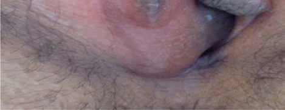<br><br><br><br><br><br><br><br><br><div class=''>a)   </div><div class=''>b)  </div><div class='correct'>c)   </div><div class=''>d)     </div><p><i>         .       : • ƒ   •   •    •  ...</i></p></div><div class='q'><p><b>Q2:</b>                ?                ?                          .       ?             ?           ?     ,             _____.           ?            '  . Å       ‚-ƒ    ______.                     Å ‚    . ƒ       „…               . †   ,                      ?                       _____.                     ?                   ?   - -                 .        ,      .                    ?                      :   - -               Å‚Å   .                     ?          ?                         ?                ?                     .    . Å     ‚  ‚     ‚?                ?       ,       .                ?                     ?                  ?                        ?       -          ?                         .                      ?                 ?                        /? b)     Å ‚                    ‚ .                  . ƒ „  ,   .                     ?              ,              .   ,        .    Å      ?                   ?               ?                ?                ?                      Å      . ‚                 ?      '      ?               .                ?                  .           ?           ______.                    ?             ?                .         ,        .                 Å ‚ ?                   ?                   ?              ?   -- ,           .             .    Å       ?      ,                   Å    . ‚                . 864 </p><div class=''>a) ƒ</div><div class=''>b) ’  </div><div class='correct'>c)    </div><div class=''>d) „ </div><p><i>                  .        ...</i></p></div><div class='q'><p><b>Q3:</b>           Å‚        .            ? 5                    .            ?                 ?                     ?              ?  Å ‚ --      -      .  ƒ  „… † /‚             .            ?               ?               Ž     ?   ˆ--           ‰ ‚        . Š         . ‹       ? 159                 .           ? 177  ‚                   . ‚                ƒ    „      …†   .                  ?   - -  Å ‚         ƒ        . „       … '  .                   ? a)                :  260                ?  „       ƒ- - … †‡     .                        ? 272                ?                   ?  Å         /               ?                      . Å ‚         † ‚     †   ‚      ‚?                         .       ?                      ƒ„   ?           _____.               ‚       ?       ƒ          ?  Å     ,                ‚?  …         -         .                ?   - -            .                                 ?     - ‚         ‚. ƒ „   …     ‚. †     ‚   -‡?       ‚                    .                   ‚ . ƒ „  ,   .          .           ?    Å  „         …&;†     ____.               ?                .                ? 591  „                ˆ:                 ?     „    …- -      †                   . ‚               ?            . 670   -         Å‚       -             ƒ  . „  ,                     .         ?  716             -       .                     .             ?  731 ƒ„- -              . …            ?                     .                ?               Å   _______.  †    ‚   Å  ?           „      ?                            .               ? 820               ?              ?  …              †‡--        . ‚    . 865 </p><br><br><div class=''>a)    </div><div class=''>b) ˆ   </div><div class='correct'>c) ˆ '  </div><div class=''>d) ‰ -Š  </div><p><i>       Š  '  ,      Š  '   .           ...</i></p></div><div class='q'><p><b>Q4:</b>     „        ?                 ? 32   „…--                      .                ? 48                     ‚ ? 66           ? 88     ,        ____. 110  „ - -       …ņ            . ‡   - -                          .                . 127  ‘        : 145  Š                    ?             „  ?   ˆ‰-            Š†             …    -   .            ? 205  ‰          ,    '                       .        ? 221  235  ‡ ˆ               . ‰             .   …‚- -   †‚                   .         .                 ?  ‹            Š                 Å‚Å.           ?                 ? 286  ‚ ƒ                 …     .               ? 304           ? 332                  ‚†  .         ‡ˆ. Å      ? 349                 ‚       ? 372                  ††‡? 393  „- -  …‚      ‚†          -    . ‡       .                      ? 416  ˆ ‹„- -     ‚    …Š     ‚     .                ? 435  ˆ               †„     .          & ;    (‚ ‰Š ),         454          ?  „ -  -     …           †. ‡ ‚     /  ‡. „   ‚            ‚ / ‡.       ? 467  …   ƒ‡                        .                ? 490          Å‚                . ‚                       ? 504  †      ‚  - ‚     ‹  -‡ ? 520  533          ‚                ?                 ? 554   Å         . ‚                 ƒ    „.       „ ? 571   Å‚--                         .  ƒ  ,     ƒ           .           ?  ‹  ,    ____. 614          ,             ? 639  ‚            Š       ? 657          ƒ      .      ?            ,               ? 699                           ?  …              ?                       ? 751  „ …†--               Å .      .     Å  ? 761  †   ‚   ? 785                ? 797                          ?           ‚ ? 829                 --            ? 850  ‹                        . …                   .                  ? b) </p><br><br><br><br><br><br><br><div class=''>a) ‹</div><div class='correct'>b) †      </div><div class=''>c) </div><div class=''>d) </div><p><i>  „         ….     ,  „  . ‚  '   (...</i></p></div><div class='q'><p><b>Q5:</b>                  ?                     -„?                         … .             ?                ?                ƒ      ?  Å       „… †               .         ,           ?  „              …ņ     . ‡                  .            ?  ”     Ž                   . ‰      .  ‹                     ? 160      ,        ? 178   ˆ‹- - ŒˆçŠŽŠ                     . Å     ,              . è Œ            .                 ?              ƒ‹         .               ?           ç                     ‹Š    ?          ? 261   ç- -                .         ,           .  /      ()       ? 273     Å              ?                       ?                       ?  Š        ‚   . Å ‚       †  ‚?   Å…--         Å                  . † ‡  ,                 „…  .                         ?                         ˆ  ††‡?                                  Å     ?  ˆ        Œ‹ ç          …Š,   ,            ‹ . Å       .        ?  Å                                ?                     ?  …   '         ,                 ‰ ______                       ?  …   ‚         爌 - ‚    Ž Š   . †     -‡           ?     ‡ ‚      ,  ,                     .             .               ?  „          ‡             ‰-Š  .          ?               ?                             ?   ††--           .              .       ?  ƒ „…- -                      .   †       . ‡            _____        „   „                  .  Ž‰               . ‚           Œ ?                         ? 671                        .           ?                      ? 717                  . …             ?            ,           ?         '       ,              .       Å  Å  ?               . †                 ?                ?                         .              ?                ?            Å      ,                   ?  …          Œ           .               ? 866 </p><br><br><br>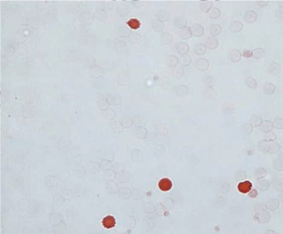<br>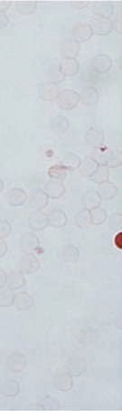<br><br><br><br>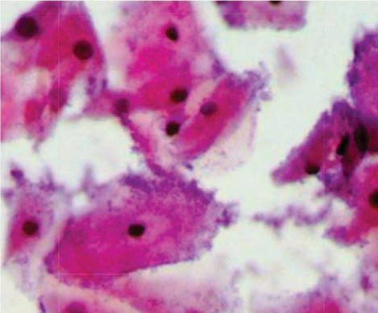<br><br>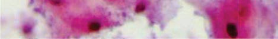<br><div class=''>a) ‚      .</div><div class='correct'>b) ‚            .</div><div class=''>c) ‚       .</div><div class=''>d) ‚   .</div><p><i> Š  ’            .              : • ...</i></p></div><div class='q'><p><b>Q6:</b>          . 6  „              ?  ˆ       ,          ‡    ‰ .     ‡ ?                  ?                ?                   ?  „          ˆ Å ‰   ‰ƒÅ ‹   . Œ    熆     Ž ’ .                      ?        êê- ‚          ç              . ‹         ?                        :         ˆ“                               Š . ”   -                  .                  ?  Œç                         .              ?             ? 236   …‹- - Œ…ç                     .                    ?                     . ‹                  .         ?               †   ?  Å                       ?              ‹            . †    ‚ƒ        .                  ?  Œ ‚   ‚    : 350    ‡                                .              ?      ‚Œ‹    ,                . ‰    ,              .             ˆ         ?  Å- -  …‚„Å              ‚Å     . ‡                .           -            (Šç)          ?  ˆ    ‚  Œ‹ ç            Ž    -ç ‚ …Š    . ˆ           Å Ž   . è  ,       Ž    .     ? 436      †…                        . è     ‰    †….† / .                       ?             †   -  ?                         ?                           .                    ?   - ‚ 爌   ‚   - ‚      .  ‘Š ,       ,  . †              ? 521               ‚            ?                ?                      . ‚         . …    ƒ    ,       .      ?                   ƒ? 592             ˆ            ?  ƒ              †    .   ê- -                  . è         „             _____  ‘. 658  Œ     …  -† ç              .         ?                -        . „  ,              .                   ? 700                           .             ?  „ƒ- -                    „Ž   . Œ     ‡  Ž        Ž  . †   ,           . …               ? 732   ƒ„- -            -  ,    ,            . …   ,                    .       ?    ˆ    ?   ƒ--                ‚ ‚                    . ç      -„              . †      ‚    ?               ?                       .             ?  ˆ †…- -                ,         . ‰ Š           .            ?                  ?               ,             . ‚  . 867 </p><br><br><br><br>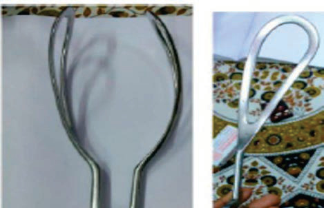<br>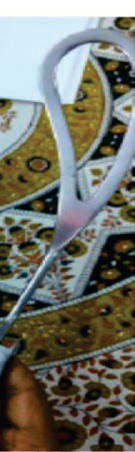<br><br>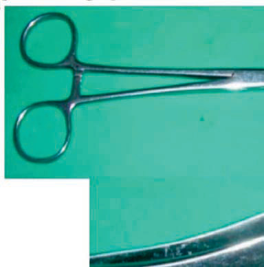<br>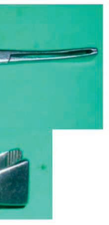<br><br><div class='correct'>a) -‹  </div><div class=''>b) ˆ '  </div><div class=''>c) „ '    </div><div class=''>d) ‹     </div><p><i>                   . Š         , ...</i></p></div><div class='q'><p><b>Q7:</b>               ç             .        ?                 ?                  .       ‡            ?               ?          ƒ  ‰   ?                             ?  è                     ,               _______.         -      .    •      ?  ‹                 -    ?        ? 179   ŒŠç…Ž†       Åç•  ˆ“             .                   ˆ‰  .                 ? 206                        ?  ‰         ê      ?  ‰           :                          . è                      ? d) 274  ˆ     Å    -      Å?  Å     ,           ?       ‹           Ž Å. ň†         .                 ‡  ?  Å ‚    ‚     † ‚   ‚   ‚ ?      Å          .                   ?                                    ?          -           .  Ž         .       ?  ˆ                  -    . ê Å ‚   ,     . ê        ?                . Å       ‚ê‘         .        ? 455                           -  ?  …                     ÅÅ  / .               ?  Š    ˆ‚‰     ‹-   . „                    -   .          , Œ     ,      .                    ?  „  ‚            êŽ Å    ,    -    :   ç   † ‚               ‚.             , , -    / . Ž              .              ? 534  „ --                     .                . Œ -           .       ç ?   †‡-  -               .                ?                         ?  615                 ‡   .                  ?  ƒ  -        ,    ,    . Œ    ,             .              ?   ’- -                „ . ‚               ?              ê       . Œ            ‘…….      ?              , Š  '      ‹       „....   ‹Å--                      .          ?  …                   ?                                   .                  ?  „                       .        Å      ?   ƒ--                 ‚   .  ’  ,  ‚           . ç‚    ‚             . †          ’     ? 786  Å'            -    , ,      .               ?  821 ˆ                       ?  ˆ †- -      Œƒ      . ç           . ‹     Š  "ˆ". 830                 „       ?  ‹                     †    . ‚       .          ? </p><br><br><br><br><br><div class=''>a) ç  </div><div class=''>b) Ž  </div><div class=''>c)     </div><div class='correct'>d) ƒ   </div><p><i> 18      ,  è                 .  ...</i></p></div><div class='q'><p><b>Q8:</b>            ___. 7                .   Œ        ? 33                  ‰-   ? 49                    .Ž       .                 .        ? 67   ƒ    ‰             ‰. Œ  ‰      ‰  . 89  Å                          .             ,          . Å                    ? 111  „               .         ê        ? 128                 ? 146  ‹                 ? 161                               .             ?                      .            .          ?  222                     .            ç  ?                    .     ç     ?  è                      . ê                .            .      ?                               Š  ______.  ˆ                ? 287                     ? 305  333          Ž†ƒ.             ?             è  . ‹  ,       ‚†  . ‘            '  ‚          . Å     † ?  373   ‡                   ‹    .           ?  394   -            .                       ?  417               ê            Ž    .                         ?  ˆ        Œ ç       Ž‚ ‚      ‚     ‹ ç. ’ Ž   ,        Œ ç           . Å            .          ? 437     „“                  . ‰                              .    ,       ‰  ‡.“ / .          ?                    -  ? 468  491 …     „Å             .         ,    .                ?  505  Ž‚…            .                      ?   ˆè- -  - ‚  ‚        ˆ Š   . ƒ       - ‚.  „   …     ‚.        ,     ‹         ?                        ‘ ‚    .          .   „        .                „?               ? 555  572  †‡-  -     -    „       . ˆ            .               ?   Œç--                         Å   .  ƒ  ,  Ž               .      ?   …‡--                . ç            .                  ?  640 ƒ                         . Œ    ,                .                         ?   …- -      .     ,    ‡ƒŠ-”     . ‚               ?           -„   ‘‹ .      ?            ,   ,  -            .      .            ?  718                 .              ?  …                        ?  752                         .                          ?  ‚           '      ______. 762  “      ‘   -          ______.                       . ƒ          †   .         ? 798           ?  è     :                ? 851  ‹ †Å--    è              -     ƒ…Š.   ,                 .      ? 868 </p><br><br><br><br><div class=''>a) ˆ  </div><div class=''>b) Ž </div><div class='correct'>c) ƒ    </div><div class=''>d) ƒ     </div><p><i>                 . (ƒ   -     ,     ) ...</i></p></div><div class='q'><p><b>Q9:</b>  èʼn‰              ç . Å   ,           .                     ?  ç                      .            ?   ŠŠ                      .            .        ?  Š       ,                      .        ? 68  ‡              ‰      ‰    ƒ .       ‰.        ƒ   ƒ    ?               ê    ?  „ - -                   ‘        ’-     .      ‘      ?        ,                    . –                 .          ?  ‹           ‚  ç '   ?                             .       ?       Š„    ŒŠç…    .              ?                ç:  237               ç  . ‘                 .                      ?   …Å- -             .                  .              ? 262     ‚-                   .             †     ,                . ê        Š   ?   ‚- -    Š              .      ‹Œ         ?  è                 .              ?                        .      ?     ‚    ‚ †  è       ‚     . ‡   †   †  ‚†  . ‡ˆ      ‚    ‚‚ ‚†. Å ‚               ?   ç „         Å…        -       Œ Å   . † ‡  , Ž - „„…/è… ê  ‘ - …  .      ‡      ?         ††‡,    †‚Šƒ              .     Ž              ?  Œ                       ê        .       ê       ?  ˆ “- -         ‚     .                    -   β- Å   ?                             ? 456  „ -  -    †               . ‡   ‘/ƒ ‡. ’         +. „        ‚    ‚‚  , “  :  …   …      ,            ______.                  .           ?  „     ,       ‚             - ‚     ?                    ?  „                              -  .         ,                  -Š  .         ?   ƒ†-  -       Š ‹       . ‚             „     . ‚     -           . ‹    Œ,           ,       .      „ ?    -                     è      è .                ?    ˆ          ŒŽ--                .           ?  ƒ        „è- -           . ‡             .          ?  659     „         . ‚       „            ?                  ‡ ‘ ? 672            Å‚       -                . „  ,  „            .         .   Å‚--         Œ Ž           . è   ,                .         ?  …              ?                 Œç- -     .            . Answer Key Question No. Correct Option 753 Detailed Explanations  „ †Œ--              .                  ?   ‹--              êè”  . †                      ?  ‰‹- -                        . ‡     -                              .             ?             ‹                 -       ?  ˆ †…- -      -    . ‰      .         ? 831                           . ê   .  ‚                     . 869 </p><br><br><br><br><br><br><br><br><br><br><br><br><br><br><br>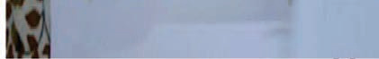<br><br><div class=''>a) ê   </div><div class='correct'>b) ê   </div><div class=''>c)    </div><div class=''>d)   </div><p><i>       ,                 .   ...</i></p></div><div class='q'><p><b>Q10:</b>           ,   ç        .       ç   ?  Ž                    Œ. „    .                        . è           .               ?   ’‹“        †                 .             ?  ‡ èê-‰-      ‰            ƒ .     ,        .            ƒ ƒ ? 90          ‘          ?  “                  -    . Œ       . 129                ?           ‘ê       . †     .                ? 180           ,                                 .                    ? 207                              .            ? 223          ______      .               . Ž           ______.  „              ______.      -                  .     Å  ?  ‚                 : 306              .                   ?     †   ■ †   ‚              † . Å              ? 351   ç „ „    Å…                        . ‹                . † ‡  ,    .         .                       ?   ƒ ‡‰         ††‡,            ?                  .     艑…    ,                ?                           ?  ˆ                  „‡     .            ƒ  ?        ‚      -  ?  Ž    ,                     ?   ‹- -  Ž‚…         ‹      . „         .                          ?  „   Å' (“)  ,      ‚   ? 522                    ç    ?  „ --            ƒ…           ê          .             ?  573                         .             ?                   è    . …            .          ? 593             ? 616      ,      : 641              Œ               „ .   ,      . ‚           „    ?                   ‡ ‘ ?                     ? 701                          .                       . è   ,     .         ?  ƒê- -                           .  ,                -   . ‰       ? 733                ?  Å                    ?  - -     ‰ „                 , ,     . Œ                      ˆ .                ?            ?  ˆ „- -  Š       ,  -    ,    -    . ‰          .           ?                            .                  ? 852  ‹ †‘--                  . …                     . ‚    . </p><br>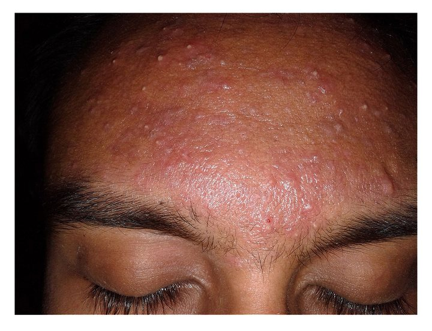<br><br><div class=''>a) ê   </div><div class=''>b) ê   </div><div class=''>c) Š  </div><div class='correct'>d)   </div><p><i>          ç         .           ...</i></p></div><div class='q'><p><b>Q11:</b>            ?  34     †     ?                  ?                        ? 69        ƒ     ?  Å                                    .                ?  „                              _____.   --       ƒ                . †                    .                        ?  162       ê--   ,   è ‚   ,            . ƒ            .      ƒ‘      . †     .            ?                              .                 ?  „       ,   ,             ƒ- -  Å‚‹         .              ?          ” ç '            .           ç          ?   …Å- -         -          .               ?         ‚-  Š              .              Š  _______. 275                         ?  è çŒ- -            . ˆ ê„‘      .     ?                  “‚. Ž†ƒ           . †  ‚ƒ        Š‰‰ Ž/Œ.               : 334   ˆçç            ‚ ‚  ƒ‡       . Å ‚          ‚?               Å        . ê             Œ.      ‡     ? 374  Š       ,     ††‡          . ‡ †Å      ‘†  /’ ‡.              ˆ Ž? 395       Å                   . ”                 .                     ? 418  Å                                      ?  ”                  , “  :  …  …’,                                _____ . 492  Ž                ______ 506  •        ‡             . †      ‚   Š   ‚                 ?             „       ? 535  „    † -„             .              ____.  ˆ                  .             ?             -‰    ?                  . è      .             ?                          ?   - -    „ „                 .     „   . ‚          ˆ†            ? 660                ‡ ‘ ?   ƒŒ--                 .     ,             .          ?   Å‘--                      ‹   . è Ž’“,                   .                  ? 719  …                       ?  „ èê--                  Å '   . ‘      .              ?  †                  ? 787                       . ƒ           .     ? 799  822 „         †‡- -                    †  . ˆ               .        ?          ‰'  ?   „-- ■               Å  ‰   .          ?      ’--                  …. ‚            . 870 </p><br><br><br><br><div class=''>a)   '  </div><div class='correct'>b) Ž' </div><div class=''>c) Ž'  </div><div class=''>d) Ž'     </div><p><i>                     .          è...</i></p></div><div class='q'><p><b>Q12:</b>                       Ž†      .      ç  ? 8  „      .   ‘„--            . † ’ “  ,            ,          ” 50 . ‚    .                     ?          ƒ‰     ƒ‰   ?                      ? 112  „          „ŽŒ      .           ‘?  147  Š ˆ   ‚                  .    •      ?  ‹  “ '  ?                            .            -‹   .              :           Š„- -     ,          ,                             .           ?   Å‚‹         ,            ˆ   .          .              ?               ? 238           ?                    ?                 ? 288  è      è †             . „     ƒ       . ‰ ƒ  ,                   . ‚ ‚    ê„‘.     ?                    .      -        ?  Å ‚        ‚         ‚ ‚ ‚  ‚ ?  ‹     ‡            ‡:                   ††‡.             ˆ    ?       ‚                .                     ?  ˆ         -        Ž _____. 438   •„Œ‹                     „“     .    ,            . ‰     “. / . ‰     ?  „ ,       ‚                   •  -  • ,    ,          . „ ‚ •,  çŽÅ †      .        469       ?  …            (çŒ)                 .              ?          ”     .                   ?   êˆ- -  çŒê - ‚        :êˆ      êŽ Š.  –ç ‚      , ,    . …         .      ‚           ?               ‚-  † ‚    .  ‚                 ‚  . ƒ „  ,       .  -’       .                ?  556 „ ”‹--        ,        .       -’ Å       Ž    . ƒ    ,   Å   Š.    Å     ?  ‹  -  ,            „ . è                    .                            ?   ŽŒ--          ,             è    . …      „  .            ?   ……--                      .                  ?  ƒ ‹’- -                 ,      . ç“              . ‡           .                 ? 642  ƒ     ,               ?                        ?         Ž             .                ?                 ?                . †   ,                   . “     . …                  ? 734          -‹        ? 763  †                   ?            ?  è          ,               ?                                  ?   ƒ--                     .              ?  …          Œ: 871 </p><br><br><br><br>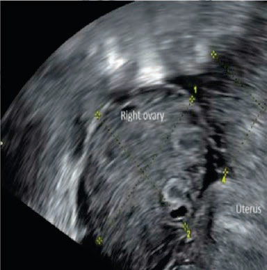<br><br><br><br><br>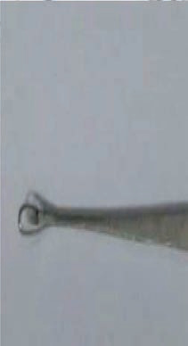<br>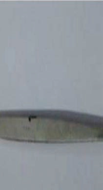<br>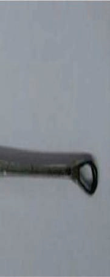<br><div class=''>a) ‰   ‚“</div><div class=''>b)       ƒ…Š</div><div class='correct'>c) “   </div><div class=''>d)      </div><p><i> ‚   ,  ç         ŽŽ . Å  ê  ç   ...</i></p></div><div class='q'><p><b>Q13:</b>                   ?  „            Œ   ? 35   •‹ƒ‹              .  ’ “         .      ?        ’‹“       ˆ      ,        ç   .ˆ.         ç        ?        -‰-           ƒ.    ’     ƒ     ?               ?                   ?  Å ‰ÅŠ                    ?  ‹   ”            ? 163         ˆ              ?   Š“- -                    -. Å     ,                -   .              ? 208  Å             .      ç         ? 224                •  ç  .            ? 239  263 Ž      -        †…     ,          . ê              .            ?         –         ?               -  ?                       ? 307                   ?  Å ‚    ‚         ‚ ‚ ‚  ‚ ?                       ?  --      ††‡                .                      ?                               ?       -          ‚       ?                . ‰                     . Å     ‚ê‘ 457        . ‰     ?              †         ?                        ?                       ?        Š  ˆè Š   .                 . †      ,      ê Š     ˆ Š    . –ç ‚           . †              '    ? 523   -   „                               .              .                   ? 536    'è'      „•-†ƒ‚èŒ           ?                  .             ,          „    ‘ .           ‘  „   ? 574   ŒŒ--              .                ?                 Ž     . ‘                      , 617    . ’              ê.       ?  ƒ               .         ƒ-ˆ„‰  .                  ?                      .              Ž‰. ‚      Œ ? 661               .             ,       -      .           ? 673   è--         Å‚                    .               ?   •--          -      .                        -         .         ? Answer Key Question No. Correct Option 720 Detailed Explanations  …                 ?  ‚        ,                     ?  –               . †                        ?  ‡             Š    _____. 800                   . ç             Š           . ê           .              ?                   ‚‹’? 832   è„--          ŽŽ          .           .               ?                      ? </p><br><br><br>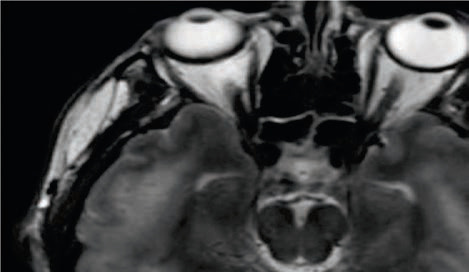<br>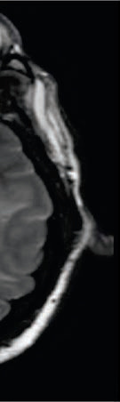<br><br><br><br><br><br><div class=''>a) ‚           </div><div class=''>b) ‚           </div><div class='correct'>c) ‚         Œ   Œ</div><div class=''>d) ‚       </div><p><i>                ,   ç    ‹ ç     . ...</i></p></div><div class='q'><p><b>Q14:</b>           . Œ   ç            ƒç '    .     ç     ?        “„’ê       .          ?  –         ?              ?  ‡       ƒ   –“Š   ‰   ‰  . –   , ‰          .    ’    ? 91                     ?  „ - -                    . “       +  .     ‘    ? 130   ‚--  Š ˆ                     .  -             .     ? 148  ‹                ƒ‘?                        ? 181                     ?      -  ç   ?           —  ç  . è †,                     . è  ,            ,          .     ç     ?   …‚- -      †’       ‰. ‘    ,   ,           .  ê   . ê            .           ?                       .                  ?                             .       Å       ?  è               ê„‘. ’           .                     ?   ‰--                      ˆ                   • . ”   , –  —‰/‹‰ ç, è  ‰ ,  Ž Å     .      ?               . Å    ‚             ê     ‚ ‚ ‚  ‚ ? 352                       ?               . 396  …„ „           ‚     . ‡                 .                        ?           ç                  ?                      .                       ?  „        -         . „                   , “  : 470     ,                Å / .                  ‰ ƒÅ  ?               Œ _____            - ‚        . †            –ç?          „   ,   ‚          „         ?  „ Š’--  •                      .               ?               ?   çŒ--              . “  -    -,            ”  .            ? 594   Œ…-              .†     . ‘‰è   .            ˆ    ?  ƒ ‹”- -              .                ?    - -          „   . ‚                ? Answer Key Question No. Correct Option Detailed Explanations                    ?  702                ,     ê  ‘.ƒ  .            ?  ƒ„- -                        ‘ƒ° . Œ           ,       ,          . …                     ?  „             ,         .       .     ? 764   ƒ‡--           ‚                ‡   . †                  ‚       ?            - ê ?   ‘’- -                 .             .              ,    .             ? 823 Answer Key Question No. Correct Option 824 Detailed Explanations                        ?                       ? 853                      Œ         .         ? 872 </p><br><br><br><br><br>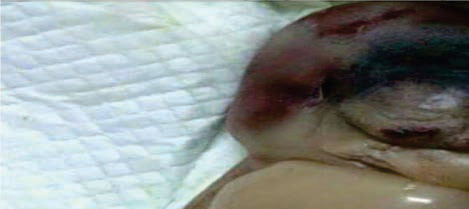<br>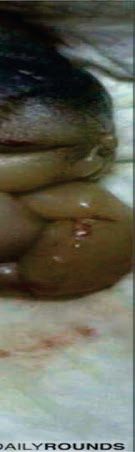<br>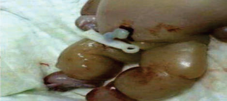<br><br><br><div class=''>a) ‹  </div><div class='correct'>b) ”   </div><div class=''>c) ˆ '  </div><div class=''>d) „    </div><p><i>                 ç     ,      ...</i></p></div><div class='q'><p><b>Q15:</b>  ” ç                        .        ç   ?  „      . 36 Answer Key Question No. Correct Option 37 Detailed Explanations   „ê--         -          .  “ ,         '         .              ? 51      •       ? 70            ƒ‰     ?  Å        ‚              . ” ê  ,     /        ‰„…/ Š  . •            †  .       ?    ‘          ,                    -.            ?                  ™ .       ,   ™         . †            . ˆ  - ’ƒ/ , èˆ -  / ç . š          †Å     .         ? Answer Key Question No. Correct Option 149 Detailed Explanations                 Å     .     ,      êè ‚       ê/  . ‹              ƒ‘    ?                       ?   Š„- -                  . ’                    ?  ‰    Œ…Å   ,                     ƒ   .              . 225             .                    ?                      ? 264 Answer Key Question No. Correct Option Detailed Explanations                    ? 276                      Š ?  Å             ,        “  .                       ? 308  ê               : 335   -† -                 .    ‚ †  ‚   -   . ‹ ‡ˆ, ‚ ‚              . Å          ?                               ? 375                 ††‡?                         . Œ      ,              . ‘ ê  ,  ˆ 419  „Å/„ÅÅ –  ‡‘‚  Å%     .                  ?  ˆ                  Ž:                         .                ?  „        -             - . –    †     †   -        .              ?  … ƒ†- -           -     .                           ? 493                         ? 507   - ‚      ‚      ‚            . †                 ? Answer Key Question No. Correct Option 524 Detailed Explanations  ê  ‚        „         _____.  „   „Ž‘-‚,             ,           .            ? 557                    ?   •Œ--              .  ƒ  ,   •         .    ƒ      ?               ?  ƒ       †     “   .       •            .       “       ?                          ?                      ?                            . …                ?                                . ‚             Å Å ?  †   ‚        ƒƒ--        -   ? 788                 .        „  „     ?  ˆ †„- -          ‹‹‹.        ?                   &;–%   ,               -       .      ?  ‚       . 873 </p><br><br><br><br><br><div class=''>a) Ž    </div><div class='correct'>b) …     </div><div class=''>c)     </div><div class=''>d) Ž   </div><p><i> Å                   .     ...</i></p></div><div class='q'><p><b>Q16:</b>     :     ? 9          ,              “  .                 ? Answer Key Question No. Correct Option Detailed Explanations                 ?  ‡ •-‰-      –…         ‰   ƒ   . ‹     ê   ƒ.    ƒ    ‰     ?                     ? 113  „          ƒ     ‘ ______.  ‹                   ?                            ?                        : 209        Œ ’  è Å  ,                -                           ?  „                    Š  ______.  Œ               _____. 289                              ?   ”-                   .      -‡          ?      ‚ ‚  ‚ ‚†     ‰‚”' ‚   . Å ‚       ‚‚      †? 353         Å                         .               ?  †             . —   Ž    . ê                    . •          .     Ž       ?                                    ?  ˆ                     ‚  .                 ? 439         —        ‹             .                      ? 458 Answer Key Question No. Correct Option Detailed Explanations  „ -  -               ‘/ ‡       +     .            ‚         ?  ‹            _____  / .   ‚…ƒ…              Œ           . Å Œ   ,                 .                         ?                 ‚   .              ‚       ?            ?                 . ‚                       .              ?   Åç--           ,                .         ,                 .              ?  ‚è            .         ? 618                ? 643  674 Š ‚                -   . ƒ                    … _______.   ƒ-                       . „  ,                 .         ?        ,         . …              ? 735               ‹-“ ˆÅ ?   ‡--       -   . ‰  ‚        ‚       . †       ?  -              .    „      ( Å‘)       „     ?            ‹ ?                         ?                                .         ? </p><br><br><br><br><br><br><br><br><div class=''>a) ' </div><div class='correct'>b) Ž </div><div class=''>c)   </div><div class=''>d) • </div><p><i>  :     ‰:Ž.                ...</i></p></div><div class='q'><p><b>Q17:</b>                ________.          ƒ                  . è ç   ,        -  .        ?           ƒ‰  ƒ  ‰   ?  Å ‚„--                „… †    .  ê  ,                     ?  „ - -  ˆÅ                    - . š‡ˆ                ,     .    ‘    ■  ?                         . ç     ,      ç    . ‹                 ? 164 Answer Key Question No. Correct Option Detailed Explanations  Š ‡ '      ç   :   Š“- -            .  ˆ–       ,            .                   ?                  Œ ’                226 Answer Key Question No. Correct Option Detailed Explanations  240                      ?   - -          ‚-            . „                        ? 277   ‚ƒ- -       -     -            . ê              .  ‹‘    „,ƒƒƒ/    .                Å   ?  è •- -   ,       ,        -      .                         ?   ‰--     (ƒ ‰)      …†ç      ‘         ,   ,    . ”   ,        . Å              •                        .         ?      ‚ ‚ ‚  ‚      †‚‚ ‰‚”' ‚ ‚ . Å ‚            ‚   ?   Å--      Å                   . ê   Ž - ˜…/… ê  ‘ - „…  . Š                 .        .                    ? 376                   .  Ž  ,                   . ê       ___. 397   -           ______.      ê’         - ç       ?                    †  -  ?                   -  . Š           ?   - -         Å‚  ê      . • ‘‚   . „          ç  .                  ?          ,                  ? 537  „ --              . Ž    . ƒ ç  ,       . –           . †             .             Å       ?          …    “     Š ‹     .             ? 575  ˆ            ?               ?  ƒ                 .               ?  Œ    „-ƒ         . ƒ    ______.                  ? 703                .  765 „ -                         ê        .               ?                          . †        ? 789 Answer Key Question No. Correct Option Detailed Explanations                ? 801               “? 833                .         ?  ‚    . 874 </p><br><br>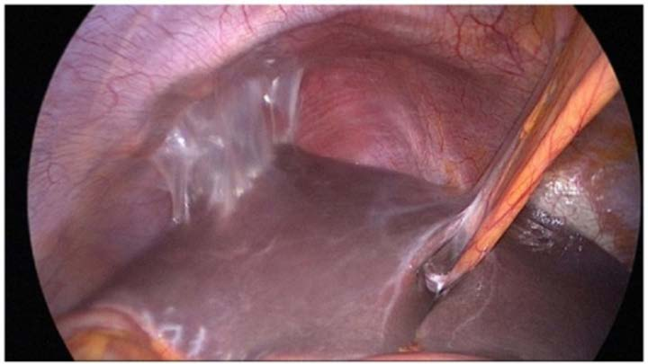<br><div class=''>a) Ž  </div><div class=''>b)     </div><div class=''>c)     </div><div class='correct'>d) ‹  </div><p><i>   '              .             ...</i></p></div><div class='q'><p><b>Q18:</b>                     ?  ’               .              ?  ‡ •-‰-   ƒ              ƒ    . –   , ƒ  ’ '   .           ? 92                   ?                     ? 131            . 182  ç                          _____.           ƒŠ.             .              ?           … †‡‡  . „                                ? Answer Key Question No. Correct Option Detailed Explanations 278                      ?  ‚                          -    .           ?  ê                .     ‚ƒ            ?   -† -     ‚  ‚      ‚†. ‘    †  ‚    ‚   ?                                  .                   ?   ‘          . a)            ‚     “——.                        ? 420  ˆ       ‚          -‚       .                  ?  „ „,                  - . „ ,    /   ‹Œ‰   †.            ? 471  Ž                         . 494            .                Œ        ?  •       .                  ,            .              ‚  ?  „ ’--             . è                       .      Å   ?        -              -    .            ?  595  ŒŒ--                ,     ,     . …        •   .  ƒ  ,                  .             ?   …‡--                  .               †   . ‘                 . ƒ ˆ  ,                  ˆ .            .       ? 619  ƒ Š‹- -                  . Œ    ,   '   . ‡    ç“        .                  ? 644 Answer Key Question No. Correct Option Detailed Explanations                . ‹            ?                        ?                 . …         '   ? 736             ,         . ‚   .  “ - -        „                     . ”       ,           .             ?  ‹               .                        êêê     ? 854 Answer Key Question No. Correct Option Detailed Explanations                           ’–--  . ‚    . 875 </p><br><br><br><br><br><div class=''>a) Œ </div><div class='correct'>b) ç </div><div class=''>c) ‹  </div><div class=''>d) ‹   </div><p><i>                     .        ...</i></p></div><div class='q'><p><b>Q19:</b>    Å   ?   ƒ- -       †              . è ç   , •         ‡             †  /  . è    , ŠŒ  ƒ.        ? 71  ‡  -‰-   ‰        .     ƒƒ   ?  Å ‚Š--     „ †                    ““           †.            .          ?  „                              .                                   ?  Œ                   _____.                       ?  è  ˆê †     ,                  .                 ?           Å                . Ž   ,            .       ‚ .‚ °‘   ‹‘    ‚,ƒƒƒ/ ‚.                ? 290  ê               : 309  336 †  ’           _____________ Answer Key Question No. Correct Option Detailed Explanations      ‚‚     •   ‰       . Š     ‚       ‚ . Å ‚       ‚‚   ?  ‹          Œ  Å…          .         ?     ††‡         ‰ê   ‘      .                  ?  ”                            . ”           -   .      ?  ˆ             ‚     . è       _____.  „ --    -        †  ‡—    .          ‚   ?                              ? Answer Key Question No. Correct Option 495 Detailed Explanations              ? 508   „                            . ê                 ŒŠŽ .        ‰             ?  „                    ? 558                   –. …    “ '   .      Œ   ?                       .   ,          .         ?                  Ž     . è          ’‚    ŽŠŠŠ  /„. è         :             ê         ? 675            -    ?  - -        †    ,           . †   ,                            . …          ?  „                 „    .      èŒ%          ,           .        ? 766            •- -              ”†ˆ. Œ   -   . ‡                -   .             ?  •                            ?  ‹ ’†--    ‚…                  .                 ? </p><br><br><br><br><div class=''>a) ‹   </div><div class=''>b) Œ </div><div class='correct'>c) ‹'  </div><div class=''>d) ”   </div><p><i> Å         .      -         .   ...</i></p></div><div class='q'><p><b>Q20:</b>             ? 10   †- -  “‰              .           ‚          ?  Œ            ‰     ƒ  ?  114                   ?               -Œˆ        ?             ‹•      .     ,              .                      ? 183  ç           ______ 210                       . è †,         ’ ,              .                ? 241                   Å     .                               .             .           ?  è  ƒ                    -      . „              .                  ?   ç-† -    ‚       ‚  ‚  ‚   .  ‚   ‚    _____   . 354                                           Œ?            ? 398             ,   ,            .                     ?  ˆ “- -             , ‚   ,        ” .  -      . †     Å ‚                        ê’    –. 440 ê         ?              ‡—    ?                 _____     Å ‚             , –   ,          ‚ .            -     .            ‚     ? 538  „ Š’--         ƒ…            ˆ       .       ,      ,     .            .           ? Answer Key Question No. Correct Option 559 Detailed Explanations   ç†-  -       ”  ç              .                 ?  †                  .                ? 596      …              . ƒ    ,              ŒˆŒ    .         ? 620                   ?   Œ--  „          .                ?  …                - -        ?  „ èŒ--                    .            ?  802        -„            ?                   ?  ‹ ’‘--        ꊔ               .                 ? 876 </p><br><br><br><div class=''>a) …      </div><div class=''>b) ‚      </div><div class=''>c)          </div><div class='correct'>d) çŒ         ‘Å </div><p><i>                   (‡ ).             ...</i></p></div><div class='q'><p><b>Q21:</b>                 ?     †            -. è ç   ,        ƒ       Š–   . ’      ŠŒ  ‡  .                 ?  ‡  -‰-     ‰     ‰  . –   ,     ‰        .     ƒ     . Ž ‰‰  ê ™™.     ?  Å          .             ?               -     ? Answer Key 132 Question No. Correct Option Detailed Explanations                  ?          ‡-           .          ______ Answer Key Question No. Correct Option 211 Detailed Explanations   ‡ ˆ            ç  . è †,         ’        .               ?                . Ž    ,    Å   ,   ,   † . è             .           ? 291   /                        ? 310  Š    ‰          .     - ‚ , †   ‚    †‚‚ ‚. Å ‚        †   ?                           . –‹            . ê           ? 377           ,                         . ‰  ,         .      ,               -   Ž. ê          ,      ˆ.          ?  …‚„„          ç‰  ƒ„     . ‘ ê  ,  ˆ      ‚. ‡                .                                 ?  … -        _____.  „    ‘     ‚              ˜         • . ˆˆ †   ‡‚  ….ƒ /        …,/  .     †  ?                        ?     ‹ Œ           ‚   ‚    .          & ;†  / .              ?  576  ‰ç-  -                .            ' „     ?                         ê   ?   …Š--               •    . ‘          .                      ?                         ?   ƒŒ--                    .  ,          .                     ? 704  …                 -   ?  „              •         ( –).       .        ? 767  –“- -                  ,         . ” ‡  ,                       .         ?  ˆ …- -     -            . Œ   ,              .             ? 834  …                 . ‚  . 877 </p><br><br><br><br><br><br><div class=''>a) ƒ </div><div class=''>b) „  </div><div class='correct'>c)   </div><div class=''>d) ‹  </div><p><i>                -       . Œ ...</i></p></div><div class='q'><p><b>Q22:</b>  ‚            ,  -ê     .              ?              ˆ        ŠŒ  … .              ?  93 ‡ ê-‰-     ‰  ƒ         ‰  . ‹      ‰. –   ,  ƒ  ƒ       ƒ.     ‰      ?  è                 ?        ‹•                     .        .                ?   - -  ‡ ˆ            —  ç  . è †,             .          ?    ,      Ž‘Œ,     - Å-     ŽŒ’.                ”     -     .              ?  è Œ- -   ,       ,      . Ž             ,      ‰‚       .               ?  Š                 •   ‰   è      ‚†. Å              †  ‚   , ‚‚  Å ‹    ?                    ‡ _____.                    ††‡? Answer Key Question No. Correct Option 399 Detailed Explanations           ƒ‚         .                       ? 421  ˆ ‹- -                    . ê    Å ‚          Å ‚              . ê    Ž                  .    Ž      ? 441 Answer Key Question No. Correct Option Detailed Explanations  472 „ -                        †   . è   ,     • .     †      ?   - -        -         . „               .           ,         .                  ? 509 Answer Key Question No. Correct Option Detailed Explanations             ‹ Œ      .        ? 539                    ?  †         ”,      ,           ____                          .                ?             ê        ‘  .            ?                  .     ,    . ê      ?  ’’- -                           . …          ? 737                  ?  –- -            -   .          ?  ‹                .  ‚            : Answer Key Question No. Correct Option 878 Detailed Explanations </p><br><br><br><br><div class='correct'>a)    </div><div class=''>b)        </div><div class=''>c)  </div><div class=''>d) ç  </div><p><i>  -ê                          .    ...</i></p></div></div></body></html>